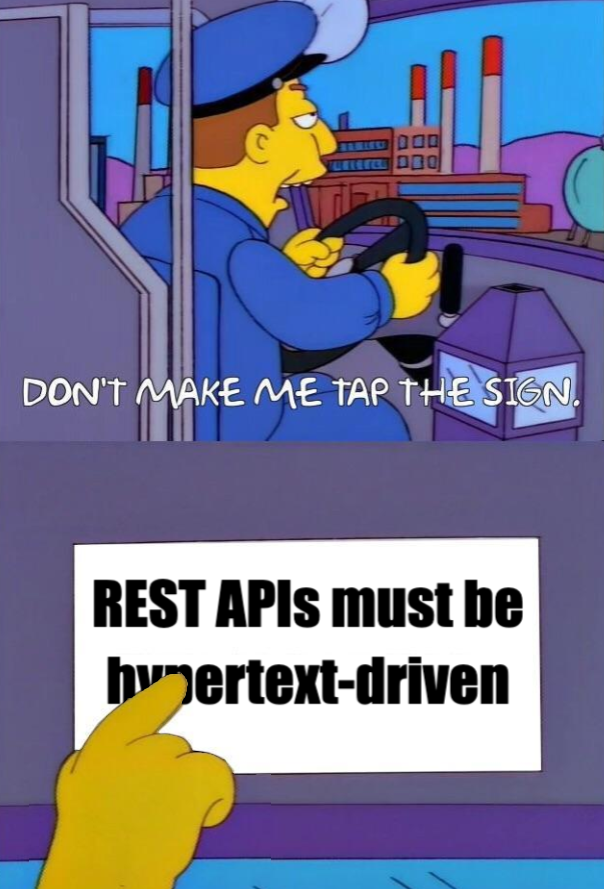
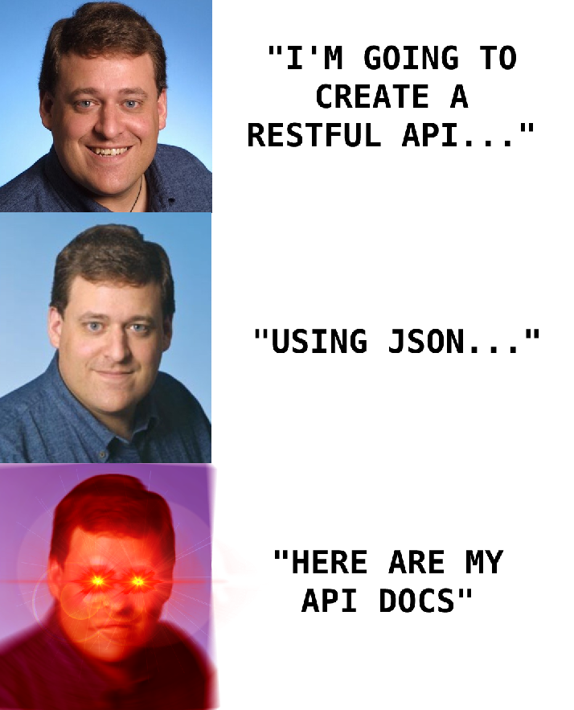

How Did REST Come To Mean The Opposite of REST?
Carson Gross🔗Tapping The Sign
I am getting frustrated by the number of people calling any HTTP-based interface a REST API. Today’s example is the SocialSite REST API. That is RPC. It screams RPC. There is so much coupling on display that it should be given an X rating.
What needs to be done to make the REST architectural style clear on the notion that hypertext is a constraint? In other words, if the engine of application state (and hence the API) is not being driven by hypertext, then it cannot be RESTful and cannot be a REST API. Period. Is there some broken manual somewhere that needs to be fixed?
–Roy Fielding, Creator of the term REST
REST must be the most broadly misused technical term in computer programming history.
I can’t think of anything else that comes close.
Today, when someone uses the term REST, they are nearly always discussing a JSON-based API using HTTP.
When you see a job post mentioning REST or a company discussing REST Guidelines they will rarely mention either hypertext or hypermedia: they will instead mention JSON, GraphQL(!) and the like.
Only a few obstinate folks grumble: but these JSON APIs aren’t RESTful!
In this post, I’d like to give you a brief, incomplete and mostly wrong history of REST, and how we got to a place where its meaning has been nearly perfectly inverted to mean what REST was original contrasted with: RPC.
🔗Where Did REST Come From?
The term REST, short for REpresentational State Transfer, came from Chapter 5 of Fielding’s PhD Dissertation. Fielding was describing the network architecture of the (then new) world wide web, and contrasting it with other possible network architectures, particularly RPC-style network architectures.
It is important to understand that, at the time of his writing (1999-2000), there were no JSON APIs: he was describing the web as it existed at that time, with HTML being exchanged over HTTP as people “surfed the web”. JSON hadn’t been created yet, and broad adoption of JSON was a decade off.
REST described a network architecture, and it was defined in terms of constraints on an API, constraints that needed to be met in order to be considered a RESTful API. The language is academic, which has contributed to the confusion around the topic, but it is clear enough that most developers should be able to understand it.
🔗The Crux of REST: The Uniform Interface & HATEOAS
REST has many constraints and concepts within it, but there is one crucial idea that I believe is the defining and most distinguishing characteristic of REST, when contrasted with other possible network architectures.
This is known as the uniform interface constraint, and more specifically within that concept, the idea of Hypermedia As The Engine of Application State (HATEOAS) or as Fielding prefers to call it, the hypermedia constraint.
In order to understand this uniform interface constraint, lets consider two HTTP responses returning information about a bank account, the first in HTML (a hypertext) and the second in JSON:
🔗An HTML Response
HTTP/1.1 200 OK
<html>
<body>
<div>Account number: 12345</div>
<div>Balance: $100.00 USD</div>
<div>Links:
<a href="/accounts/12345/deposits">deposits</a>
<a href="/accounts/12345/withdrawals">withdrawals</a>
<a href="/accounts/12345/transfers">transfers</a>
<a href="/accounts/12345/close-requests">close-requests</a>
</div>
<body>
</html>
🔗A JSON Response
HTTP/1.1 200 OK
{
"account_number": 12345,
"balance": {
"currency": "usd",
"value": 100.00
},
"status": "good"
}
The crucial difference between these two responses, and why the HTML response is RESTful, but the JSON response is not, is this:
The HTML response is entirely self-describing.
A proper hypermedia client that receives this response does not know what a bank account is, what a balance is, etc. It simply knows how to render a hypermedia, HTML.
The client knows nothing about the API end points associated with this data, except via URLs and hypermedia controls (links and forms) discoverable within the HTML itself. If the state of the resource changes such that the allowable actions available on that resource change (for example, if the account goes into overdraft) then the HTML response would change to show the new set of actions available.
The client would render this new HTML, totally unaware of what “overdraft” means or, indeed, even what a bank account is.
It is in this manner that hypertext is the engine of application state: the HTML response “carries along” all the API information necessary to continue interacting with the system directly within itself.
Now, contrast that with the second JSON response.
In this case the message is not self describing. Rather, the client must know how to interpret the status field to
display an appropriate user interface. Further, the client must know what actions are available on the account based on
“out-of-band” information, that is, information on the URLs, parameters and so forth, derived from another source of
information outside of the response, such as swagger API documentation.
The JSON response is not self-describing and does not encode the state of the resource within a hypermedia. It therefore fails the uniform interface constraint of REST, and, thus, is not RESTful.
🔗Inventor: RESTful APIs Must Be Hypermedia Driven
In Rest APIs Must Be Hypermedia Driven, Fielding goes on to say:
A REST API should be entered with no prior knowledge beyond the initial URI (bookmark) and set of standardized media types that are appropriate for the intended audience (i.e., expected to be understood by any client that might use the API). From that point on, all application state transitions must be driven by client selection of server-provided choices that are present in the received representations or implied by the user’s manipulation of those representations.
So, in a RESTful system, you should be able to enter the system through a single URL and, from that point on, all navigation and actions taken within the system should be entirely provided through self-describing hypermedia: through links and forms in HTML, for example. Beyond the entry point, in a proper RESTful system, the API client shouldn’t need any additional information about your API.
This is the source of the incredible flexibility of RESTful systems: since all responses are self describing and encode all the currently available actions available there is no need to worry about, for example, versioning your API! In fact, you don’t even need to document it!
If things change, the hypermedia responses change, and that’s it.
It’s an incredibly flexible and innovative concept for building distributed systems.
🔗Industry: Lol, No, RESTful APIs Are JSON
Today, most web developers and most companies would call the second example a RESTful API.
They probably wouldn’t even regard the first response as an API response. It’s just HTML!
(Poor HTML, can’t get no respect.)
APIs are always JSON or maybe, if you are fancy, something like Protobuf, right?
Wrong.
You are all wrong and you should feel bad.
The first response is an API response, and, in fact, the one that is RESTful!
The second response is, in fact, a Remote Procedure Call (RPC) style of API. The client and the server are coupled, just like the SocialSite API Fielding complained about back in 2008: a client needs to have additional knowledge about the resource it is working with that must be derived from some other source beyond the JSON response itself.
This API is, in spirit, nearly the opposite of REST.
Let’s call this style of API “RESTless”.
🔗How “REST” came to mean “RESTless”
Now, how on earth did we get to a spot where APIs that are obviously not RESTful are called RESTful by 99.9% of the industry?
It’s a funny story:
Roy Fielding published his dissertation in 2000.
Around the same time, XML-RPC, an explicitly RPC-inspired protocol was released and started to gather steam as a method to build APIs using HTTP. XML-RPC was part of a larger project called SOAP, from Microsoft. XML-RPC came out of a long tradition of RPC-style protocols, mainly from the enterprise world, with a lot of static typing and early XML-maximalism thrown in as well.
Also arriving at this moment was AJAX, or Asynchronous JavaScript and XML. Note well the XML here. AJAX, as everyone now knows, allows browsers to issue HTTP requests to the server in the background and process the response directly in JavaScript, opening up a whole new world of programming for the web.
The question was: what should those requests look like? They were obviously going to be XML. Look, it’s right there in the name. And this new SOAP/XML-RPC standard was out, maybe that was the right thing?
🔗Maybe REST can work for Web Services?
Some people noticed that the web had this different sort of architecture that Fielding had described, and began to ask if REST, rather than SOAP, should be the preferred mechanism for accessing what were coming to be called “Web Services”. The web was proving to be extremely flexible and growing gang busters, so maybe the same network architecture, REST, that was working so well for browsers & humans would work well for APIs.
It sounded plausible, especially when XML was the format for APIs: XML sure looks an awful lot like HTML, doesn’t it? You can imagine an XML API satisfying all of the RESTful constraints, up to and including the uniform interface.
So people began exploring this route as well.
While all this was happening, another important technology was in the process of being born: JSON
JSON was (literally) JavaScript to SOAP/RPC-XML’s Java: simple, dynamic and easy. It’s hard to believe now, when JSON is the dominant format for most web APIs, but it actually took a while for JSON to catch on. As late as 2008, discussions around API development were mainly around XML, not JSON.
🔗Formalizing REST APIs
In 2008, Martin Fowler published an article popularizing the Richardson Maturity Model, a model to determine how RESTful a given API was.
The model proposed four “levels”, with the first level being Plain Old XML, or The Swamp of POX.

From there, an API could be considered more “mature” as a REST API as it adopted the following ideas:
- Level 1: Resources (e.g. a resource-aware URL layout, contrasted with an opaque URL layout as in XML-RPC)
- Level 2: HTTP Verbs (using
GET,POST,DELETE, etc. properly) - Level 3: Hypermedia Controls (e.g. links)
Level 3 is where the uniform interface comes in, which is why this level is considered the most mature and truly “The Glory of REST”
🔗“REST” Wins, Kinda…
Unfortunately for the term REST, two things happened at this time:
- Everyone switched to JSON
- Everyone stopped at Level 2 of the RMM
JSON rapidly took over the web service/API world because SOAP/XML-RPC was so dramatically over-engineered. JSON was simple, “just worked” and was easy to read and understand.
With this change, the web development world threw off the shackles of the J2EE mindset conclusively, relegating SOAP/XML-RPC to an enterprise-only affair.
Since the REST approach wasn’t as tied to XML as SOAP/XML-RPC was, and since it didn’t impose as much formality on end points, REST was the natural place for JSON to take over. And it did so, rapidly.
During this crucial change, something became increasingly clear: most JSON APIs were stopping at Level 2 of the RMM.
Some pushed through to Level 3 by incorporating hypermedia controls in their responses, but nearly all these APIs still needed to publish documentation, indicating that the “Glory of REST” was not being achieved.
JSON taking over as the response format should have been a strong hint as well: JSON is obviously not a hypertext. You can impose hypermedia controls on top of it, but it isn’t natural. XML at least looked like HTML, kinda, so it was plausible that you could create a hypermedia with it.
JSON was just… data. Adding hypermedia controls was awkward, non-standardized and rarely used in the manner described by the uniform interface constraint.
Despite these difficulties, the term REST stuck: REST was the opposite of SOAP, JSON APIs weren’t SOAP, therefore JSON APIs were REST.
That’s the one sentence version of how we got here.
🔗The REST Wars
Despite the JSON API world never consistently achieving truly RESTful APIs, there were plenty of fights over whether or not the RESTless APIs being created were “RESTful”: arguments over URL layouts, over which HTTP verb was appropriate for a given action, flame wars about media types, and so forth.
I was young at the time, and the whole thing struck me as opaque, puritanical and alienating, so I pretty much gave up on the whole idea of REST: it was something condescending people fought about on the internet.
What I rarely saw mentioned (or, when I did, what I didn’t understand) was the concept of the uniform interface and how crucial it is to a RESTful system.
It wasn’t until I created intercooler.js and a few smart folks started telling me that it was RESTful that I got interested in the idea again.
RESTful? That’s a JSON API thing, how could my hack of a front-end library be RESTful?
So I looked into it, reread Fielding’s dissertation with fresh eyes, and discovered, lo and behold, not only was intercooler RESTful, but all the “RESTful” JSON APIs I was dealing with weren’t RESTful at all!
And, with that, I began boring the internet to tears:
- Rescuing REST From the API Winter
- The API Churn/Security Trade-off
- HATEOAS is for Humans
- Taking HTML Seriously
- Hypermedia APIs vs. Data APIs
- HATEOAS
- Hypermedia Driven Applications
- This, gentle reader, your current article.
🔗The State of REST Today
Eventually most people got tired of trying to add hypermedia controls to JSON APIs and gave up on it. While these controls worked well in certain specialized situations (e.g. paging), they never achieved the broad, obvious utility that REST found in the general, human-oriented internet. (I have a theory why that is.)
Things settled into this intermediate RESTless state, with REST slowly cementing its meaning as a JSON API at Level 1 or 2 of the RMM. But there was always the possibility that we would break through to Level 3 and the glory of REST.
Then Single Page Applications (SPAs) hit.
When SPAs hit, web development became disconnected entirely from the original underlying RESTful architecture. The entire networking architecture of SPA applications moved over to the JSON RPC style. Additionally, due to the complexity of these applications, developers specialized into front end and back end.
The front end developers were obviously not doing anything RESTful: they were working with JavaScript, building DOM object, and calling AJAX APIs when needed. This was much more like thick-client authoring than anything like the early web.
The back end engineers were still concerned with the network architecture to an extent, and they continued to use the term “REST” to describe what they were doing.
Even though they were doing things like publishing swagger documentation for their RESTful APIs or complaining about API churn of their RESTful APIs, things that wouldn’t be occurring if they were actually creating RESTful APIs.
Finally, in the late 2010s, people had had enough: REST, even in its RESTless form, simply wasn’t keep up with the needs of increasingly complex SPA applications. The applications were becoming more and more like thick clients, and thick client problems need thick client solutions, not bastardized hypermedia client solutions.
The dam really broke when GraphQL was released.
GraphQL couldn’t be less RESTful: you absolutely have to have documentation to understand how to work with an API that uses GraphQL. The client and the server are extremely tightly coupled. There are no native hypermedia controls in it. It offers schemas and, in many ways, feels a lot like an updated and stripped-down version of XML-RPC.
And here I want to say: that’s OK!
People really, really like GraphQL in many cases and, if you are building a thick client style application, that makes a lot of sense:
The short answer to this question is that HATEOAS isn’t a good fit for most modern use cases for APIs. That is why after almost 20 years, HATEOAS still hasn’t gained wide adoption among developers. GraphQL on the other hand is spreading like wildfire because it solves real-world problems.
So GraphQL isn’t REST, it doesn’t claim to be REST, it doesn’t want to be REST.
But, as of today, the vast majority of developers and companies, even as they excitedly add GraphQL functionality to their APIs, continue to use the term REST to describe what they are building.
🔗OK, What Can We Do About This Situation?
Unfortunately, voidfunc is probably right:
You can tap the sign as much as you want, that battle was lost a long time ago. REST is just the common term people use for HTTP+JSON RPC.
We are going to keep calling obviously non-RESTful JSON APIs REST because that’s just what everyone calls them now.
Despite my increasingly vigorous sign tapping, 50 years from now Global Omni Corp. will still be advertising jobs for working on v138 of their RESTful JSON API’s swagger documentation.
The situation is hopeless, but not serious.
Regardless, there is an opportunity here to explain REST and, in particular, the uniform interface to a new generation of web developers who may have never heard of those concepts in their original context, and who assume REST === JSON APIs.
People sense something is wrong, and maybe REST, real, actual REST, not RESTless, could be a part of the answer to that.
At the very least, the ideas behind REST are interesting and worth knowing just as general software engineering knowledge.
There is a larger meta-point here too: even a relatively smart group of people (early web developers), with the benefit of the internet, and with a pretty clear (if at times academic) specification for the term REST, were unable to keep the meaning consistent with its original meaning over period of two decades.
If we can get this so obviously wrong, what else could we be wrong about?